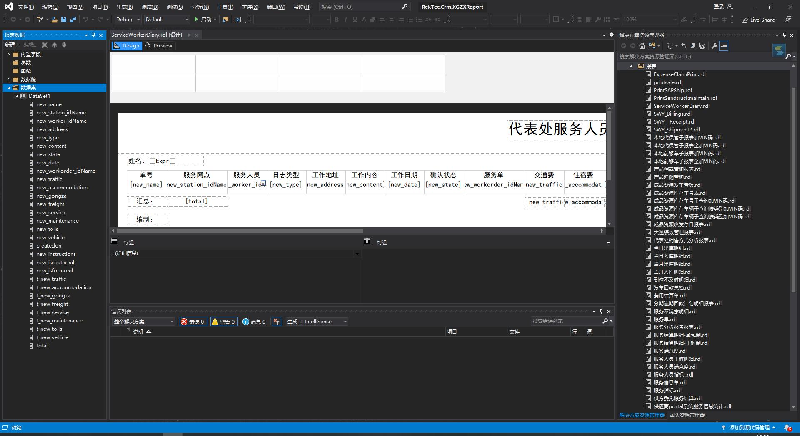
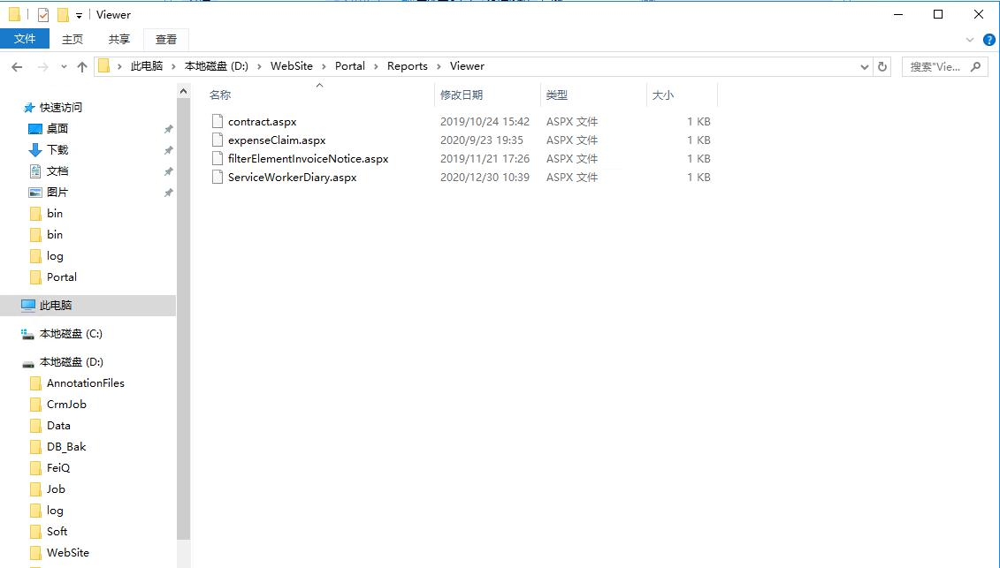
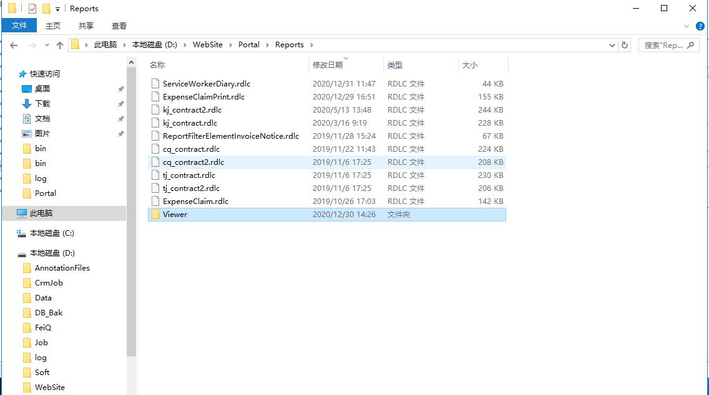

<!DOCTYPE html>


<html lang="ch">


<head>
  <meta charset="utf-8" />
   
  <meta name="keywords" content="life" />
   
  <meta name="description" content="blog for LiMingHua" />
  
  <meta name="viewport" content="width=device-width, initial-scale=1, maximum-scale=1" />
  <title>
    Portal报表开发 |  岛
  </title>
  <meta name="generator" content="hexo-theme-ayer">
  
  <link rel="shortcut icon" href="/favicon.ico" />
  
  
<link rel="stylesheet" href="/dist/main.css">

  
<link rel="stylesheet" href="https://cdn.jsdelivr.net/gh/Shen-Yu/cdn/css/remixicon.min.css">

  
<link rel="stylesheet" href="/css/custom.css">

  
  
<script src="https://cdn.jsdelivr.net/npm/pace-js@1.0.2/pace.min.js"></script>

  
  

  

<link rel="alternate" href="/atom.xml" title="岛" type="application/atom+xml">
</head>

</html>

<body>
  <div id="app">
    <main class="content on">
      <section class="outer">
  <article id="post-Portal报表开发" class="article article-type-post" itemscope
  itemprop="blogPost" data-scroll-reveal>

  <div class="article-inner">
    
    <header class="article-header">
       
<h1 class="article-title sea-center" style="border-left:0" itemprop="name">
  Portal报表开发
</h1>
 

    </header>
    

    
    <div class="article-meta">
      <a href="/2020/12/30/Portal%E6%8A%A5%E8%A1%A8%E5%BC%80%E5%8F%91/" class="article-date">
  <time datetime="2020-12-30T01:47:32.000Z" itemprop="datePublished">2020-12-30</time>
</a>
      
  <div class="article-category">
    <a class="article-category-link" href="/categories/%E5%B7%A5%E4%BD%9C/">工作</a>
  </div>

      
      
<div class="word_count">
    <span class="post-time">
        <span class="post-meta-item-icon">
            <i class="ri-quill-pen-line"></i>
            <span class="post-meta-item-text"> Word count:</span>
            <span class="post-count">1.3k</span>
        </span>
    </span>

    <span class="post-time">
        &nbsp; | &nbsp;
        <span class="post-meta-item-icon">
            <i class="ri-book-open-line"></i>
            <span class="post-meta-item-text"> Reading time≈</span>
            <span class="post-count">7 min</span>
        </span>
    </span>
</div>

      
    </div>
    

    
    
    <div class="tocbot"></div>


    

    
    <div class="article-entry" itemprop="articleBody">
      
      

      
      <h2 id="RekTec-XStudio-ReportViewer"><a href="#RekTec-XStudio-ReportViewer" class="headerlink" title="RekTec.XStudio.ReportViewer"></a>RekTec.XStudio.ReportViewer</h2><blockquote>
<p>portal端报表的dll</p>
</blockquote>
<h2 id="VS-Report项目中新增报表项目"><a href="#VS-Report项目中新增报表项目" class="headerlink" title="VS Report项目中新增报表项目"></a>VS Report项目中新增报表项目</h2><blockquote>
<p>报表中查询数据及绑定数据源仅用来设计并生成报表，真正需要的是生成后带有绑定数据标签的报表页面，因此报表中的字段名应与portal端赋值时的model字段名保持一致。<br>报表完成开发后需生成报表rdl文件。</p>
</blockquote>
<p></p>
<h2 id="Portal端新增WEB窗体项目（aspx）"><a href="#Portal端新增WEB窗体项目（aspx）" class="headerlink" title="Portal端新增WEB窗体项目（aspx）"></a>Portal端新增WEB窗体项目（aspx）</h2><blockquote>
<p>项目开发完成后生成dll并上传至bin目录，将作为后台的webapi</p>
</blockquote>
<h3 id="aspx"><a href="#aspx" class="headerlink" title="aspx"></a>aspx</h3><figure class="highlight html"><table><tr><td class="gutter"><pre><span class="line">1</span><br><span class="line">2</span><br><span class="line">3</span><br><span class="line">4</span><br><span class="line">5</span><br><span class="line">6</span><br><span class="line">7</span><br><span class="line">8</span><br><span class="line">9</span><br><span class="line">10</span><br><span class="line">11</span><br><span class="line">12</span><br><span class="line">13</span><br><span class="line">14</span><br><span class="line">15</span><br><span class="line">16</span><br><span class="line">17</span><br><span class="line">18</span><br><span class="line">19</span><br><span class="line">20</span><br></pre></td><td class="code"><pre><span class="line">&lt;%@ Page Language=&quot;C#&quot; AutoEventWireup=&quot;true&quot; CodeBehind=&quot;ServiceWorkerDiary.aspx.cs&quot; Inherits=&quot;RekTec.XStudio.ReportViewer.Reports.Viewer.WebForm1&quot; %&gt;</span><br><span class="line">&lt;%@ Register Assembly=&quot;Microsoft.ReportViewer.WebForms, Version=14.0.0.0, Culture=neutral, PublicKeyToken=89845dcd8080cc91&quot; Namespace=&quot;Microsoft.Reporting.WebForms&quot; TagPrefix=&quot;rsweb&quot; %&gt;</span><br><span class="line"></span><br><span class="line"><span class="meta">&lt;!DOCTYPE <span class="meta-keyword">html</span>&gt;</span></span><br><span class="line"></span><br><span class="line"><span class="tag">&lt;<span class="name">html</span> <span class="attr">xmlns</span>=<span class="string">&quot;http://www.w3.org/1999/xhtml&quot;</span>&gt;</span></span><br><span class="line"><span class="tag">&lt;<span class="name">head</span> <span class="attr">runat</span>=<span class="string">&quot;server&quot;</span>&gt;</span></span><br><span class="line"><span class="tag">&lt;<span class="name">meta</span> <span class="attr">http-equiv</span>=<span class="string">&quot;Content-Type&quot;</span> <span class="attr">content</span>=<span class="string">&quot;text/html; charset=utf-8&quot;</span>/&gt;</span></span><br><span class="line">    <span class="tag">&lt;<span class="name">title</span>&gt;</span><span class="tag">&lt;/<span class="name">title</span>&gt;</span></span><br><span class="line"><span class="tag">&lt;/<span class="name">head</span>&gt;</span></span><br><span class="line"><span class="tag">&lt;<span class="name">body</span>&gt;</span></span><br><span class="line">    <span class="tag">&lt;<span class="name">form</span> <span class="attr">id</span>=<span class="string">&quot;form1&quot;</span> <span class="attr">runat</span>=<span class="string">&quot;server&quot;</span>&gt;</span></span><br><span class="line">        <span class="tag">&lt;<span class="name">asp:ScriptManager</span> <span class="attr">runat</span>=<span class="string">&quot;server&quot;</span>&gt;</span><span class="tag">&lt;/<span class="name">asp:ScriptManager</span>&gt;</span></span><br><span class="line">        <span class="tag">&lt;<span class="name">rsweb:ReportViewer</span> <span class="attr">ID</span>=<span class="string">&quot;ReportViewer1&quot;</span> <span class="attr">runat</span>=<span class="string">&quot;server&quot;</span> <span class="attr">ProcessingMode</span>=<span class="string">&quot;Local&quot;</span> <span class="attr">Width</span>=<span class="string">&quot;100%&quot;</span> <span class="attr">SizeToReportContent</span>=<span class="string">&quot;True&quot;</span> <span class="attr">AsyncRendering</span>=<span class="string">&quot;False&quot;</span>&gt;</span></span><br><span class="line">            <span class="tag">&lt;<span class="name">LocalReport</span>&gt;</span><span class="tag">&lt;/<span class="name">LocalReport</span>&gt;</span></span><br><span class="line">        <span class="tag">&lt;/<span class="name">rsweb:ReportViewer</span>&gt;</span></span><br><span class="line">    <span class="tag">&lt;/<span class="name">form</span>&gt;</span></span><br><span class="line"><span class="tag">&lt;/<span class="name">body</span>&gt;</span></span><br><span class="line"><span class="tag">&lt;/<span class="name">html</span>&gt;</span></span><br><span class="line"></span><br></pre></td></tr></table></figure>
<blockquote>
<p>ReportViewer:展现报表的时使用的一个控件。</p>
</blockquote>
<h3 id="aspx-cs"><a href="#aspx-cs" class="headerlink" title="aspx.cs"></a>aspx.cs</h3><figure class="highlight csharp"><table><tr><td class="gutter"><pre><span class="line">1</span><br><span class="line">2</span><br><span class="line">3</span><br><span class="line">4</span><br><span class="line">5</span><br><span class="line">6</span><br><span class="line">7</span><br><span class="line">8</span><br><span class="line">9</span><br><span class="line">10</span><br><span class="line">11</span><br><span class="line">12</span><br><span class="line">13</span><br><span class="line">14</span><br><span class="line">15</span><br><span class="line">16</span><br><span class="line">17</span><br><span class="line">18</span><br><span class="line">19</span><br><span class="line">20</span><br><span class="line">21</span><br><span class="line">22</span><br><span class="line">23</span><br><span class="line">24</span><br><span class="line">25</span><br><span class="line">26</span><br><span class="line">27</span><br><span class="line">28</span><br><span class="line">29</span><br><span class="line">30</span><br><span class="line">31</span><br><span class="line">32</span><br><span class="line">33</span><br><span class="line">34</span><br><span class="line">35</span><br><span class="line">36</span><br><span class="line">37</span><br><span class="line">38</span><br><span class="line">39</span><br><span class="line">40</span><br><span class="line">41</span><br><span class="line">42</span><br><span class="line">43</span><br><span class="line">44</span><br><span class="line">45</span><br><span class="line">46</span><br><span class="line">47</span><br><span class="line">48</span><br><span class="line">49</span><br><span class="line">50</span><br><span class="line">51</span><br><span class="line">52</span><br><span class="line">53</span><br><span class="line">54</span><br><span class="line">55</span><br><span class="line">56</span><br><span class="line">57</span><br><span class="line">58</span><br><span class="line">59</span><br><span class="line">60</span><br><span class="line">61</span><br><span class="line">62</span><br><span class="line">63</span><br><span class="line">64</span><br><span class="line">65</span><br><span class="line">66</span><br><span class="line">67</span><br><span class="line">68</span><br><span class="line">69</span><br><span class="line">70</span><br><span class="line">71</span><br><span class="line">72</span><br><span class="line">73</span><br><span class="line">74</span><br><span class="line">75</span><br><span class="line">76</span><br><span class="line">77</span><br><span class="line">78</span><br><span class="line">79</span><br><span class="line">80</span><br><span class="line">81</span><br><span class="line">82</span><br><span class="line">83</span><br><span class="line">84</span><br><span class="line">85</span><br><span class="line">86</span><br><span class="line">87</span><br><span class="line">88</span><br><span class="line">89</span><br><span class="line">90</span><br><span class="line">91</span><br><span class="line">92</span><br><span class="line">93</span><br><span class="line">94</span><br><span class="line">95</span><br><span class="line">96</span><br><span class="line">97</span><br><span class="line">98</span><br><span class="line">99</span><br><span class="line">100</span><br><span class="line">101</span><br><span class="line">102</span><br><span class="line">103</span><br><span class="line">104</span><br><span class="line">105</span><br><span class="line">106</span><br><span class="line">107</span><br><span class="line">108</span><br><span class="line">109</span><br><span class="line">110</span><br><span class="line">111</span><br><span class="line">112</span><br><span class="line">113</span><br><span class="line">114</span><br><span class="line">115</span><br><span class="line">116</span><br><span class="line">117</span><br><span class="line">118</span><br><span class="line">119</span><br><span class="line">120</span><br><span class="line">121</span><br><span class="line">122</span><br><span class="line">123</span><br><span class="line">124</span><br><span class="line">125</span><br><span class="line">126</span><br><span class="line">127</span><br><span class="line">128</span><br><span class="line">129</span><br><span class="line">130</span><br><span class="line">131</span><br><span class="line">132</span><br><span class="line">133</span><br><span class="line">134</span><br><span class="line">135</span><br><span class="line">136</span><br><span class="line">137</span><br></pre></td><td class="code"><pre><span class="line"><span class="keyword">using</span> Microsoft.Reporting.WebForms;</span><br><span class="line"><span class="keyword">using</span> RekTec.Crm.Common.Helper;</span><br><span class="line"><span class="keyword">using</span> RekTec.Crm.Common.Logger;</span><br><span class="line"><span class="keyword">using</span> RekTec.XStudio.ReportViewer.Reports.Model;</span><br><span class="line"><span class="keyword">using</span> System;</span><br><span class="line"><span class="keyword">using</span> System.Collections.Generic;</span><br><span class="line"><span class="keyword">using</span> System.Data;</span><br><span class="line"><span class="keyword">using</span> System.Linq;</span><br><span class="line"><span class="keyword">using</span> System.Web;</span><br><span class="line"><span class="keyword">using</span> System.Web.UI;</span><br><span class="line"><span class="keyword">using</span> System.Web.UI.WebControls;</span><br><span class="line"></span><br><span class="line"><span class="keyword">namespace</span> <span class="title">RekTec.XStudio.ReportViewer.Reports.Viewer</span></span><br><span class="line">&#123;</span><br><span class="line">    <span class="keyword">public</span> <span class="keyword">partial</span> <span class="keyword">class</span> <span class="title">WebForm1</span> : <span class="title">System.Web.UI.Page</span></span><br><span class="line">    &#123;</span><br><span class="line">        Logger log = <span class="keyword">new</span> Logger();</span><br><span class="line">        <span class="function"><span class="keyword">protected</span> <span class="keyword">void</span> <span class="title">Page_Load</span>(<span class="params"><span class="built_in">object</span> sender, EventArgs e</span>)</span></span><br><span class="line"><span class="function"></span>        &#123;</span><br><span class="line">            <span class="keyword">if</span> (!IsPostBack)</span><br><span class="line">            &#123;</span><br><span class="line">                <span class="keyword">var</span> new_worker_id = Request[<span class="string">&quot;id&quot;</span>];</span><br><span class="line">                <span class="keyword">this</span>.BindReportDataSource(new_worker_id);</span><br><span class="line">            &#125;</span><br><span class="line">        &#125;</span><br><span class="line"></span><br><span class="line">        <span class="function"><span class="keyword">private</span> <span class="keyword">void</span> <span class="title">BindReportDataSource</span>(<span class="params"><span class="built_in">string</span> new_worker_id</span>)</span></span><br><span class="line"><span class="function"></span>        &#123;</span><br><span class="line">            <span class="keyword">var</span> list = <span class="keyword">new</span> List&lt;ServiceWorkerDiaryModel&gt;();</span><br><span class="line">            <span class="keyword">using</span> (XStudio.Data.PersisitBroker broker = <span class="keyword">new</span> XStudio.Data.PersisitBroker(<span class="string">&quot;crm&quot;</span>))</span><br><span class="line">            &#123;</span><br><span class="line">                <span class="keyword">var</span> sql = <span class="string">$@&quot;SELECT</span></span><br><span class="line"><span class="string">	                            new_name, </span></span><br><span class="line"><span class="string">	                            new_station_idName, </span></span><br><span class="line"><span class="string">	                            new_worker_idName, </span></span><br><span class="line"><span class="string">	                            new_address, </span></span><br><span class="line"><span class="string">	                            new_content,</span></span><br><span class="line"><span class="string">	                            CONVERT(varchar(10), DATEADD(hh, 8, new_date),120) new_date,</span></span><br><span class="line"><span class="string">	                            TB01.name as new_type, </span></span><br><span class="line"><span class="string">	                            TB02.name as new_state, </span></span><br><span class="line"><span class="string">	                            new_workorder_idName, </span></span><br><span class="line"><span class="string">	                            new_traffic, </span></span><br><span class="line"><span class="string">	                            new_accommodation, </span></span><br><span class="line"><span class="string">	                            new_gongza, </span></span><br><span class="line"><span class="string">	                            new_freight, </span></span><br><span class="line"><span class="string">	                            new_service, </span></span><br><span class="line"><span class="string">	                            new_maintenance, </span></span><br><span class="line"><span class="string">	                            new_tolls, </span></span><br><span class="line"><span class="string">	                            new_vehicle,</span></span><br><span class="line"><span class="string">	                            new_instructions, </span></span><br><span class="line"><span class="string">	                            TB03.name as new_isroutereal, </span></span><br><span class="line"><span class="string">	                            TB04.name as new_isformreal, </span></span><br><span class="line"><span class="string">	                            CONVERT(varchar(20), DATEADD(hh, 8, createdon),120) createdon </span></span><br><span class="line"><span class="string">                            FROM</span></span><br><span class="line"><span class="string">	                            new_srv_dailylog</span></span><br><span class="line"><span class="string">	                            OUTER APPLY fn_GetPickListNameByLang ( &#x27;new_srv_dailylog&#x27;, &#x27;new_type&#x27;, new_type, &#x27;2052&#x27; ) AS TB01</span></span><br><span class="line"><span class="string">	                            OUTER APPLY fn_GetPickListNameByLang ( &#x27;new_srv_dailylog&#x27;, &#x27;new_state&#x27;, new_state, &#x27;2052&#x27; ) AS TB02</span></span><br><span class="line"><span class="string">	                            OUTER APPLY fn_GetPickListNameByLang ( &#x27;new_srv_dailylog&#x27;, &#x27;new_isroutereal&#x27;, new_isroutereal, &#x27;2052&#x27; ) AS TB03</span></span><br><span class="line"><span class="string">	                            OUTER APPLY fn_GetPickListNameByLang ( &#x27;new_srv_dailylog&#x27;, &#x27;new_isformreal&#x27;, new_isformreal, &#x27;2052&#x27; ) AS TB04</span></span><br><span class="line"><span class="string">                            WHERE</span></span><br><span class="line"><span class="string">	                            new_worker_id =&#x27;<span class="subst">&#123;new_worker_id&#125;</span>&#x27;</span></span><br><span class="line"><span class="string">                            and  StateCode = 0&quot;</span>;</span><br><span class="line"></span><br><span class="line">                <span class="keyword">var</span> sql2 = <span class="string">@&quot;SELECT</span></span><br><span class="line"><span class="string">	                            sum(new_traffic) as t_new_traffic,</span></span><br><span class="line"><span class="string">	                            sum(new_accommodation) as t_new_accommodation,</span></span><br><span class="line"><span class="string">	                            sum(new_gongza) as t_new_gongza, </span></span><br><span class="line"><span class="string">	                            sum(new_freight) as t_new_freight,</span></span><br><span class="line"><span class="string">	                            sum(new_service) as t_new_service, </span></span><br><span class="line"><span class="string">	                            sum(new_maintenance) as t_new_maintenance, </span></span><br><span class="line"><span class="string">	                            sum(new_tolls) as t_new_tolls, </span></span><br><span class="line"><span class="string">	                            sum(new_vehicle) as t_new_vehicle,</span></span><br><span class="line"><span class="string">	                            (sum(new_traffic)+sum(new_accommodation)+sum(new_gongza)+sum(new_freight)+sum(new_service)+sum(new_maintenance)+sum(new_tolls)+sum(new_vehicle)) as total</span></span><br><span class="line"><span class="string">                            FROM</span></span><br><span class="line"><span class="string">	                            new_srv_dailylog</span></span><br><span class="line"><span class="string">                            WHERE</span></span><br><span class="line"><span class="string">	                             new_worker_id = &#x27;&quot;</span>+ new_worker_id+ <span class="string">&quot;&#x27;GROUP BY new_worker_id&quot;</span>;</span><br><span class="line"></span><br><span class="line">                <span class="keyword">var</span> dt = broker.Query(sql);</span><br><span class="line">                <span class="keyword">var</span> dt2 = broker.Query(sql2);</span><br><span class="line"></span><br><span class="line">                <span class="keyword">if</span> (dt != <span class="literal">null</span> &amp;&amp; dt.Rows.Count &gt; <span class="number">0</span>)</span><br><span class="line">                &#123;</span><br><span class="line">                    <span class="keyword">foreach</span> (DataRow dr <span class="keyword">in</span> dt.Rows)</span><br><span class="line">                    &#123;</span><br><span class="line">                        <span class="keyword">var</span> model = <span class="keyword">new</span> ServiceWorkerDiaryModel();</span><br><span class="line">                        model.new_name = Cast.ConToString(dr[<span class="string">&quot;new_name&quot;</span>]);</span><br><span class="line">                        model.new_station_idName = Cast.ConToString(dr[<span class="string">&quot;new_station_idName&quot;</span>]);</span><br><span class="line">                        model.new_worker_idName = Cast.ConToString(dr[<span class="string">&quot;new_worker_idName&quot;</span>]);</span><br><span class="line">                        model.new_type = Cast.ConToString(dr[<span class="string">&quot;new_type&quot;</span>]);</span><br><span class="line">                        model.new_state = Cast.ConToString(dr[<span class="string">&quot;new_state&quot;</span>]);</span><br><span class="line">                        model.new_workorder_idName = Cast.ConToString(dr[<span class="string">&quot;new_workorder_idName&quot;</span>]);</span><br><span class="line">                        model.new_traffic = Cast.ConToDecimal(dr[<span class="string">&quot;new_traffic&quot;</span>]).ToString(<span class="string">&quot;0.00&quot;</span>);</span><br><span class="line">                        model.new_accommodation = Cast.ConToDecimal(dr[<span class="string">&quot;new_accommodation&quot;</span>]).ToString(<span class="string">&quot;0.00&quot;</span>);</span><br><span class="line">                        model.new_gongza = Cast.ConToDecimal(dr[<span class="string">&quot;new_gongza&quot;</span>]).ToString(<span class="string">&quot;0.00&quot;</span>);</span><br><span class="line">                        model.new_freight = Cast.ConToDecimal(dr[<span class="string">&quot;new_freight&quot;</span>]).ToString(<span class="string">&quot;0.00&quot;</span>);</span><br><span class="line">                        model.new_service = Cast.ConToDecimal(dr[<span class="string">&quot;new_service&quot;</span>]).ToString(<span class="string">&quot;0.00&quot;</span>);</span><br><span class="line">                        model.new_maintenance = Cast.ConToDecimal(dr[<span class="string">&quot;new_maintenance&quot;</span>]).ToString(<span class="string">&quot;0.00&quot;</span>);</span><br><span class="line">                        model.new_tolls = Cast.ConToDecimal(dr[<span class="string">&quot;new_tolls&quot;</span>]).ToString(<span class="string">&quot;0.00&quot;</span>);</span><br><span class="line">                        model.new_vehicle = Cast.ConToDecimal(dr[<span class="string">&quot;new_vehicle&quot;</span>]).ToString(<span class="string">&quot;0.00&quot;</span>);</span><br><span class="line">                        model.createdon = Cast.ConToString(dr[<span class="string">&quot;createdon&quot;</span>]);</span><br><span class="line">                        model.new_address = Cast.ConToString(dr[<span class="string">&quot;new_address&quot;</span>]);</span><br><span class="line">                        model.new_content = Cast.ConToString(dr[<span class="string">&quot;new_content&quot;</span>]);</span><br><span class="line">                        model.new_date = Cast.ConToString(dr[<span class="string">&quot;new_date&quot;</span>]);</span><br><span class="line">                        model.new_instructions = Cast.ConToString(dr[<span class="string">&quot;new_instructions&quot;</span>]);</span><br><span class="line">                        model.new_isroutereal = Cast.ConToString(dr[<span class="string">&quot;new_isroutereal&quot;</span>]);</span><br><span class="line">                        model.new_isformreal = Cast.ConToString(dr[<span class="string">&quot;new_isformreal&quot;</span>]);</span><br><span class="line">                        list.Add(model);</span><br><span class="line">                    &#125;</span><br><span class="line">                    DataRow dr2 = dt2.Rows[<span class="number">0</span>];</span><br><span class="line">                    <span class="keyword">foreach</span> (ServiceWorkerDiaryModel model <span class="keyword">in</span> list)</span><br><span class="line">                    &#123;</span><br><span class="line">                        model.t_new_traffic = Cast.ConToDecimal(dr2[<span class="string">&quot;t_new_traffic&quot;</span>]).ToString(<span class="string">&quot;0.00&quot;</span>);</span><br><span class="line">                        model.t_new_accommodation = Cast.ConToDecimal(dr2[<span class="string">&quot;t_new_accommodation&quot;</span>]).ToString(<span class="string">&quot;0.00&quot;</span>);</span><br><span class="line">                        model.t_new_gongza = Cast.ConToDecimal(dr2[<span class="string">&quot;t_new_gongza&quot;</span>]).ToString(<span class="string">&quot;0.00&quot;</span>);</span><br><span class="line">                        model.t_new_freight = Cast.ConToDecimal(dr2[<span class="string">&quot;t_new_freight&quot;</span>]).ToString(<span class="string">&quot;0.00&quot;</span>);</span><br><span class="line">                        model.t_new_service = Cast.ConToDecimal(dr2[<span class="string">&quot;t_new_service&quot;</span>]).ToString(<span class="string">&quot;0.00&quot;</span>);</span><br><span class="line">                        model.t_new_maintenance = Cast.ConToDecimal(dr2[<span class="string">&quot;t_new_maintenance&quot;</span>]).ToString(<span class="string">&quot;0.00&quot;</span>);</span><br><span class="line">                        model.t_new_tolls = Cast.ConToDecimal(dr2[<span class="string">&quot;t_new_tolls&quot;</span>]).ToString(<span class="string">&quot;0.00&quot;</span>);</span><br><span class="line">                        model.t_new_vehicle = Cast.ConToDecimal(dr2[<span class="string">&quot;t_new_vehicle&quot;</span>]).ToString(<span class="string">&quot;0.00&quot;</span>);</span><br><span class="line">                        model.total = Cast.ConToDecimal(dr2[<span class="string">&quot;total&quot;</span>]).ToString(<span class="string">&quot;0.00&quot;</span>);</span><br><span class="line"></span><br><span class="line">                    &#125;</span><br><span class="line">                &#125;</span><br><span class="line">      </span><br><span class="line">            &#125;</span><br><span class="line"></span><br><span class="line"></span><br><span class="line">            <span class="comment">//根据自己的实际情况去获取数据源</span></span><br><span class="line">            ReportViewer1.LocalReport.ReportPath = Server.MapPath(<span class="string">&quot;../ServiceWorkerDiary.rdlc&quot;</span>);<span class="comment">//直接引用rdlc文件</span></span><br><span class="line">            ReportViewer1.LocalReport.DataSources.Add(<span class="keyword">new</span> ReportDataSource(<span class="string">&quot;DataSet1&quot;</span>, list));</span><br><span class="line">            ReportViewer1.LocalReport.Refresh();</span><br><span class="line"></span><br><span class="line">        &#125;</span><br><span class="line">    &#125;</span><br><span class="line">&#125;</span><br><span class="line"></span><br></pre></td></tr></table></figure>
<blockquote>
<p>rdlc 文件：.rdlc是VS2005中报表文件的后缀名，是Report Definition Language Client的缩写，直接翻译过来可以理解为报表定义语言客户端。<br>和rdlc同时存在的还有一个rdl，就是上面这个全程前3个单词的缩写。<br>从SQL Server 2005开始，微软提供了一个报表服务(Reporting Service)，而rdl是指那些针对报表服务部署在服务器端的报表，而rdlc是指在本地的一些报表。<br>也就是说我们要使用报表不一定要依赖于SQL Server的Reporting Service，而是可以自主生成一些数据源然后通过报表的方式展现出来。如果和rdl比较，rdlc可以看成是一个轻量级的报表。</p>
</blockquote>
<h2 id="上传报表文件和页面"><a href="#上传报表文件和页面" class="headerlink" title="上传报表文件和页面"></a>上传报表文件和页面</h2><blockquote>
<p>将之前生成的rdl改名为rdlc文件并上传至服务器上相关目录（aspx.cs 代码中绑定的目录）</p>
</blockquote>
<figure class="highlight csharp"><table><tr><td class="gutter"><pre><span class="line">1</span><br></pre></td><td class="code"><pre><span class="line">ReportViewer1.LocalReport.ReportPath = Server.MapPath(<span class="string">&quot;../ServiceWorkerDiary.rdlc&quot;</span>);<span class="comment">//直接引用rdlc文件</span></span><br></pre></td></tr></table></figure>
<p><br></p>
<h2 id="访问服务器路径资源"><a href="#访问服务器路径资源" class="headerlink" title="访问服务器路径资源"></a>访问服务器路径资源</h2><blockquote>
<p><a target="_blank" rel="noopener" href="http://10.8.32.143:8081/Reports/Viewer/ServiceWorkerDiary.aspx?id=C635F6B6-81EB-EA11-8ABD-005056AF9937">http://10.8.32.143:8081/Reports/Viewer/ServiceWorkerDiary.aspx?id=C635F6B6-81EB-EA11-8ABD-005056AF9937</a></p>
</blockquote>

      
      <!-- reward -->
      
      <div id="reward-btn">
        Donate
      </div>
      
    </div>
    
    
      <!-- copyright -->
      
        <div class="declare">
          <ul class="post-copyright">
            <li>
              <i class="ri-copyright-line"></i>
              <strong>Copyright： </strong>
              Copyright is owned by the author. For commercial reprints, please contact the author for authorization. For non-commercial reprints, please indicate the source.
            </li>
          </ul>
        </div>
        
    <footer class="article-footer">
      
          
<div class="share-btn">
      <span class="share-sns share-outer">
        <i class="ri-share-forward-line"></i>
        分享
      </span>
      <div class="share-wrap">
        <i class="arrow"></i>
        <div class="share-icons">
          
          <a class="weibo share-sns" href="javascript:;" data-type="weibo">
            <i class="ri-weibo-fill"></i>
          </a>
          <a class="weixin share-sns wxFab" href="javascript:;" data-type="weixin">
            <i class="ri-wechat-fill"></i>
          </a>
          <a class="qq share-sns" href="javascript:;" data-type="qq">
            <i class="ri-qq-fill"></i>
          </a>
          <a class="douban share-sns" href="javascript:;" data-type="douban">
            <i class="ri-douban-line"></i>
          </a>
          <!-- <a class="qzone share-sns" href="javascript:;" data-type="qzone">
            <i class="icon icon-qzone"></i>
          </a> -->
          
          <a class="facebook share-sns" href="javascript:;" data-type="facebook">
            <i class="ri-facebook-circle-fill"></i>
          </a>
          <a class="twitter share-sns" href="javascript:;" data-type="twitter">
            <i class="ri-twitter-fill"></i>
          </a>
          <a class="google share-sns" href="javascript:;" data-type="google">
            <i class="ri-google-fill"></i>
          </a>
        </div>
      </div>
</div>

<div class="wx-share-modal">
    <a class="modal-close" href="javascript:;"><i class="ri-close-circle-line"></i></a>
    <p>扫一扫，分享到微信</p>
    <div class="wx-qrcode">
      
    </div>
</div>

<div id="share-mask"></div>
      
      
  <ul class="article-tag-list" itemprop="keywords"><li class="article-tag-list-item"><a class="article-tag-list-link" href="/tags/CRM/" rel="tag">CRM</a></li><li class="article-tag-list-item"><a class="article-tag-list-link" href="/tags/Portal/" rel="tag">Portal</a></li><li class="article-tag-list-item"><a class="article-tag-list-link" href="/tags/vsReport/" rel="tag">vsReport</a></li></ul>


    </footer>

  </div>

  
  
  <nav class="article-nav">
    
      <a href="/2020/12/30/FetchXML%E6%9F%A5%E8%AF%A2/" class="article-nav-link">
        <strong class="article-nav-caption">上一篇</strong>
        <div class="article-nav-title">
          
            FetchXML查询
          
        </div>
      </a>
    
    
      <a href="/2020/12/22/%E7%91%9E%E6%B3%B0%E7%A7%BB%E5%8A%A8%E5%B9%B3%E5%8F%B0/" class="article-nav-link">
        <strong class="article-nav-caption">下一篇</strong>
        <div class="article-nav-title">瑞泰移动平台</div>
      </a>
    
  </nav>


  

  
  
<!-- valine评论 -->
<div id="vcomments-box">
    <div id="vcomments">
    </div>
</div>
<script src="//cdn1.lncld.net/static/js/3.0.4/av-min.js"></script>
<script src='https://cdn.jsdelivr.net/npm/valine@1.3.10/dist/Valine.min.js'></script>
<script>
    new Valine({
        el: '#vcomments',
        app_id: '3ca37UwilGw72aqkh37fe6U5-gzGzoHsz',
        app_key: 'owV6K1tLvndEdJMFJ3prXXDV',
        path: window.location.pathname,
        notify: 'false',
        verify: 'false',
        avatar: 'monsterid',
        placeholder: '给我的文章加点评论吧~',
        recordIP: true
    });
    const infoEle = document.querySelector('#vcomments .info');
    if (infoEle && infoEle.childNodes && infoEle.childNodes.length > 0) {
        infoEle.childNodes.forEach(function (item) {
            item.parentNode.removeChild(item);
        });
    }
</script>
<style>
    #vcomments-box {
        padding: 5px 30px;
    }

    @media screen and (max-width: 800px) {
        #vcomments-box {
            padding: 5px 0px;
        }
    }

    #vcomments-box #vcomments {
        background-color: #fff;
    }

    .v .vlist .vcard .vh {
        padding-right: 20px;
    }

    .v .vlist .vcard {
        padding-left: 10px;
    }
</style>

  

  
  
  
  
  

</article>
</section>
      <footer class="footer">
  <div class="outer">
    <ul>
      <li>
        Copyrights &copy;
        2020-2021
        <i class="ri-heart-fill heart_icon"></i> 李明华
      </li>
    </ul>
    <ul>
      <li>
        
      </li>
    </ul>
    <ul>
      <li>
        
        
        <span>
  <span><i class="ri-user-3-fill"></i>Visitors:<span id="busuanzi_value_site_uv"></span></s>
  <span class="division">|</span>
  <span><i class="ri-eye-fill"></i>Views:<span id="busuanzi_value_page_pv"></span></span>
</span>
        
      </li>
    </ul>
    <ul>
      
    </ul>
    <ul>
      <li>
        <!-- cnzz统计 -->
        
        <script type="text/javascript" src='https://s9.cnzz.com/z_stat.php?id=1278069914&amp;web_id=1278069914'></script>
        
      </li>
    </ul>
  </div>
</footer>
      <div class="float_btns">
        <div class="totop" id="totop">
  <i class="ri-arrow-up-line"></i>
</div>

<div class="todark" id="todark">
  <i class="ri-moon-line"></i>
</div>

      </div>
    </main>
    <aside class="sidebar on">
      <button class="navbar-toggle"></button>
<nav class="navbar">
  
  <ul class="nav nav-main">
    
    <li class="nav-item">
      <a class="nav-item-link" href="/">主页</a>
    </li>
    
    <li class="nav-item">
      <a class="nav-item-link" href="/archives">归档</a>
    </li>
    
    <li class="nav-item">
      <a class="nav-item-link" href="/categories">分类</a>
    </li>
    
    <li class="nav-item">
      <a class="nav-item-link" href="/tags">标签</a>
    </li>
    
    <li class="nav-item">
      <a class="nav-item-link" href="/photos">相册</a>
    </li>
    
    <li class="nav-item">
      <a class="nav-item-link" href="/2020/04/17/aboutMe/">关于我</a>
    </li>
    
  </ul>
</nav>
<nav class="navbar navbar-bottom">
  <ul class="nav">
    <li class="nav-item">
      
      <a class="nav-item-link nav-item-search"  title="Search">
        <i class="ri-search-line"></i>
      </a>
      
      
      <a class="nav-item-link" target="_blank" href="/atom.xml" title="RSS Feed">
        <i class="ri-rss-line"></i>
      </a>
      
    </li>
  </ul>
</nav>
<div class="search-form-wrap">
  <div class="local-search local-search-plugin">
  <input type="search" id="local-search-input" class="local-search-input" placeholder="Search...">
  <div id="local-search-result" class="local-search-result"></div>
</div>
</div>
    </aside>
    <script>
      if (window.matchMedia("(max-width: 768px)").matches) {
        document.querySelector('.content').classList.remove('on');
        document.querySelector('.sidebar').classList.remove('on');
      }
    </script>
    <div id="mask"></div>

<!-- #reward -->
<div id="reward">
  <span class="close"><i class="ri-close-line"></i></span>
  <p class="reward-p"><i class="ri-cup-line"></i>请我喝杯咖啡吧~</p>
  <div class="reward-box">
    
    <div class="reward-item">
      
      <span class="reward-type">支付宝</span>
    </div>
    
    
    <div class="reward-item">
      
      <span class="reward-type">微信</span>
    </div>
    
  </div>
</div>
    
<script src="/js/jquery-2.0.3.min.js"></script>


<script src="/js/lazyload.min.js"></script>


<script>
  try {
    var typed = new Typed("#subtitle", {
      strings: ['面朝大海，春暖花开', '愿你一生努力，一生被爱', '想要的都拥有，得不到的都释怀'],
      startDelay: 0,
      typeSpeed: 200,
      loop: true,
      backSpeed: 100,
      showCursor: true
    });
  } catch (err) {
  }

</script>


<script src="/js/tocbot.min.js"></script>

<script>
  // Tocbot_v4.7.0  http://tscanlin.github.io/tocbot/
  tocbot.init({
    tocSelector: '.tocbot',
    contentSelector: '.article-entry',
    headingSelector: 'h1, h2, h3, h4, h5, h6',
    hasInnerContainers: true,
    scrollSmooth: true,
    scrollContainer: 'main',
    positionFixedSelector: '.tocbot',
    positionFixedClass: 'is-position-fixed',
    fixedSidebarOffset: 'auto'
  });
</script>


<script src="https://cdn.jsdelivr.net/npm/jquery-modal@0.9.2/jquery.modal.min.js"></script>
<link rel="stylesheet" href="https://cdn.jsdelivr.net/npm/jquery-modal@0.9.2/jquery.modal.min.css">
<script src="https://cdn.jsdelivr.net/npm/justifiedGallery@3.7.0/dist/js/jquery.justifiedGallery.min.js"></script>

<script src="/dist/main.js"></script>


<!-- Root element of PhotoSwipe. Must have class pswp. -->
<div class="pswp" tabindex="-1" role="dialog" aria-hidden="true">

    <!-- Background of PhotoSwipe. 
         It's a separate element as animating opacity is faster than rgba(). -->
    <div class="pswp__bg"></div>

    <!-- Slides wrapper with overflow:hidden. -->
    <div class="pswp__scroll-wrap">

        <!-- Container that holds slides. 
            PhotoSwipe keeps only 3 of them in the DOM to save memory.
            Don't modify these 3 pswp__item elements, data is added later on. -->
        <div class="pswp__container">
            <div class="pswp__item"></div>
            <div class="pswp__item"></div>
            <div class="pswp__item"></div>
        </div>

        <!-- Default (PhotoSwipeUI_Default) interface on top of sliding area. Can be changed. -->
        <div class="pswp__ui pswp__ui--hidden">

            <div class="pswp__top-bar">

                <!--  Controls are self-explanatory. Order can be changed. -->

                <div class="pswp__counter"></div>

                <button class="pswp__button pswp__button--close" title="Close (Esc)"></button>

                <button class="pswp__button pswp__button--share" style="display:none" title="Share"></button>

                <button class="pswp__button pswp__button--fs" title="Toggle fullscreen"></button>

                <button class="pswp__button pswp__button--zoom" title="Zoom in/out"></button>

                <!-- Preloader demo http://codepen.io/dimsemenov/pen/yyBWoR -->
                <!-- element will get class pswp__preloader--active when preloader is running -->
                <div class="pswp__preloader">
                    <div class="pswp__preloader__icn">
                        <div class="pswp__preloader__cut">
                            <div class="pswp__preloader__donut"></div>
                        </div>
                    </div>
                </div>
            </div>

            <div class="pswp__share-modal pswp__share-modal--hidden pswp__single-tap">
                <div class="pswp__share-tooltip"></div>
            </div>

            <button class="pswp__button pswp__button--arrow--left" title="Previous (arrow left)">
            </button>

            <button class="pswp__button pswp__button--arrow--right" title="Next (arrow right)">
            </button>

            <div class="pswp__caption">
                <div class="pswp__caption__center"></div>
            </div>

        </div>

    </div>

</div>

<link rel="stylesheet" href="https://cdn.jsdelivr.net/npm/photoswipe@4.1.3/dist/photoswipe.min.css">
<link rel="stylesheet" href="https://cdn.jsdelivr.net/npm/photoswipe@4.1.3/dist/default-skin/default-skin.min.css">
<script src="https://cdn.jsdelivr.net/npm/photoswipe@4.1.3/dist/photoswipe.min.js"></script>
<script src="https://cdn.jsdelivr.net/npm/photoswipe@4.1.3/dist/photoswipe-ui-default.min.js"></script>

<script>
    function viewer_init() {
        let pswpElement = document.querySelectorAll('.pswp')[0];
        let $imgArr = document.querySelectorAll(('.article-entry img:not(.reward-img)'))

        $imgArr.forEach(($em, i) => {
            $em.onclick = () => {
                // slider展开状态
                // todo: 这样不好，后面改成状态
                if (document.querySelector('.left-col.show')) return
                let items = []
                $imgArr.forEach(($em2, i2) => {
                    let img = $em2.getAttribute('data-idx', i2)
                    let src = $em2.getAttribute('data-target') || $em2.getAttribute('src')
                    let title = $em2.getAttribute('alt')
                    // 获得原图尺寸
                    const image = new Image()
                    image.src = src
                    items.push({
                        src: src,
                        w: image.width || $em2.width,
                        h: image.height || $em2.height,
                        title: title
                    })
                })
                var gallery = new PhotoSwipe(pswpElement, PhotoSwipeUI_Default, items, {
                    index: parseInt(i)
                });
                gallery.init()
            }
        })
    }
    viewer_init()
</script>


<script src="/js/busuanzi-2.3.pure.min.js"></script>


<script type="text/javascript" src="https://js.users.51.la/20544303.js"></script>


<!-- 复制 -->

  
<link rel="stylesheet" href="/css/clipboard.css">

  <script src="https://cdn.jsdelivr.net/npm/clipboard@2/dist/clipboard.min.js"></script>
<script>
  function wait(callback, seconds) {
    var timelag = null;
    timelag = window.setTimeout(callback, seconds);
  }
  !function (e, t, a) {
    var initCopyCode = function(){
      var copyHtml = '';
      copyHtml += '<button class="btn-copy" data-clipboard-snippet="">';
      copyHtml += '<i class="ri-file-copy-2-line"></i><span>COPY</span>';
      copyHtml += '</button>';
      $(".highlight .code pre").before(copyHtml);
      $(".article pre code").before(copyHtml);
      var clipboard = new ClipboardJS('.btn-copy', {
        target: function(trigger) {
          return trigger.nextElementSibling;
        }
      });
      clipboard.on('success', function(e) {
        let $btn = $(e.trigger);
        $btn.addClass('copied');
        let $icon = $($btn.find('i'));
        $icon.removeClass('ri-file-copy-2-line');
        $icon.addClass('ri-checkbox-circle-line');
        let $span = $($btn.find('span'));
        $span[0].innerText = 'COPIED';
        
        wait(function () { // 等待两秒钟后恢复
          $icon.removeClass('ri-checkbox-circle-line');
          $icon.addClass('ri-file-copy-2-line');
          $span[0].innerText = 'COPY';
        }, 2000);
      });
      clipboard.on('error', function(e) {
        e.clearSelection();
        let $btn = $(e.trigger);
        $btn.addClass('copy-failed');
        let $icon = $($btn.find('i'));
        $icon.removeClass('ri-file-copy-2-line');
        $icon.addClass('ri-time-line');
        let $span = $($btn.find('span'));
        $span[0].innerText = 'COPY FAILED';
        
        wait(function () { // 等待两秒钟后恢复
          $icon.removeClass('ri-time-line');
          $icon.addClass('ri-file-copy-2-line');
          $span[0].innerText = 'COPY';
        }, 2000);
      });
    }
    initCopyCode();
  }(window, document);
</script>


    
    <div id="music">
    
    
    
    <iframe frameborder="no" border="1" marginwidth="0" marginheight="0" width="200" height="52"
        src="//music.163.com/outchain/player?type=2&id=480654&auto=1&height=32"></iframe>
</div>

<style>
    #music {
        position: fixed;
        right: 15px;
        bottom: 0;
        z-index: 998;
    }
</style>
    
  </div>
</body>

</html>